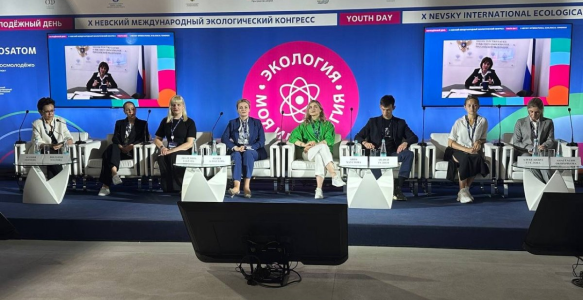
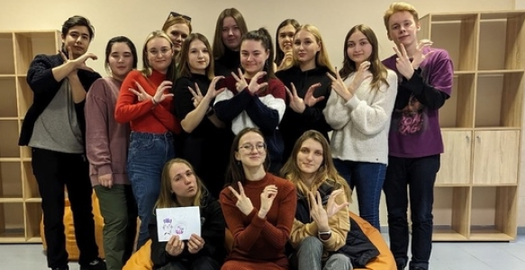
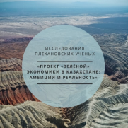
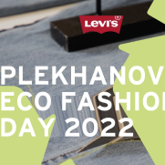
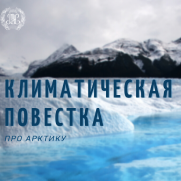
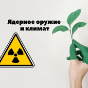
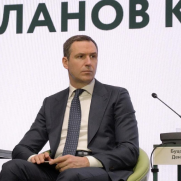
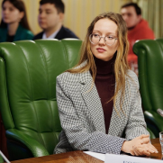
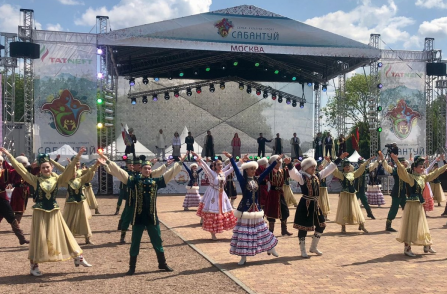

новости
- 
24.05.23
Экологоия для молодёжи:
Плехановсий университет на экологическом коннгрессе
- 
22.05.23
РЭУ им. Г.В. Плеханова победил
в конкурсе студенческих экопроектов «Мой зеленый вуз»
- 
12.02.23
Учёные РЭУ им. Г.В. Плеханова
представят проект «зелёной» экономики в Казахстане
- 
04.02.23
Разумное потребление:
Eco Fashion Day в Плехановке
- 
12.01.23
Устойчивое развитие Арктики:
ориентация на коренные народы
- 
22.12.22
Ядерное оружие и климат-
главное для международного сообщества
- 
20.12.22
Денис Буцаев назначен заведущим кафедрой
РЭО в РЭУ им. Г.В. Плеханова
- 
19.12.22
Зеленый университет:
экология в РЭУ им. Г.В. Плеханова
- 
28.10.22
Эко-фестиваль РЭУ:
«Мой зеленый вуз»